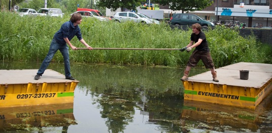

Commissieleden gezocht
Altijd al willen meewerken aan een groot muziekevenement?
Op 30 mei t/m 1 juni 2014 vindt voor de 5e keer het festival Muziek op de Dommel plaats.
Voor de organisatie van dit festival is het bestuur aangewezen op een grote groep vrijwilligers die het festival mede mogelijk maken.
Door mee te werken:
- Lever je een bijdrage aan een van de meest toegankelijke culturele festivals in Eindhoven
- Steun je honderden muzikanten en breng je duizenden mensen in aanraking met klassieke muziek
- Doe je ervaring op in de organisatie van een groot evenement
En bovendien:
- Krijg je een mooi Muziek op de Dommel vrijwilligers-T-shirt
- Wordt er gezorgd voor eten en drinken tijdens het festival en de opbouw
- Ga je naar de introductieborrel
- Beleef je een topweek met leuke jonge mensen
- Wordt voor alle vrijwilligers een gratis barbecue georganiseerd na afloop van het festival.
Aanmelden
Je kunt je als vrijwilliger aanmelden door een e-mail te sturen naar
en daarbij ook aan te geven welke dagen je wilt helpen (vóór het festival: 27 tot 29 mei, festival: 30 mei t/m 1 juni, na het festival: 1 tot 4 juni). De exacte tijden en data zijn nog niet bekend, maar houd de dagen dus alvast vrij!
Meld je ook alvast aan bij onze vrijwilligers-facebookgroep.
Bij Muziek op de Dommel krijg je meer verantwoordelijkheid dan alleen achter de bar staan. Je maakt echt een deel uit van het festival!
Je kunt bijvoorbeeld je aanmelden als stagehand, promotiemedewerker of artiestenbegeleider. Maar ook aanlopend op het festival zoeken wij extra handen voor de opbouw en afbraak.
Interesse? Laat het ons weten via e-mail of via dit formulier en we sturen je meer informatie.

Foto: Ronald Paulissen